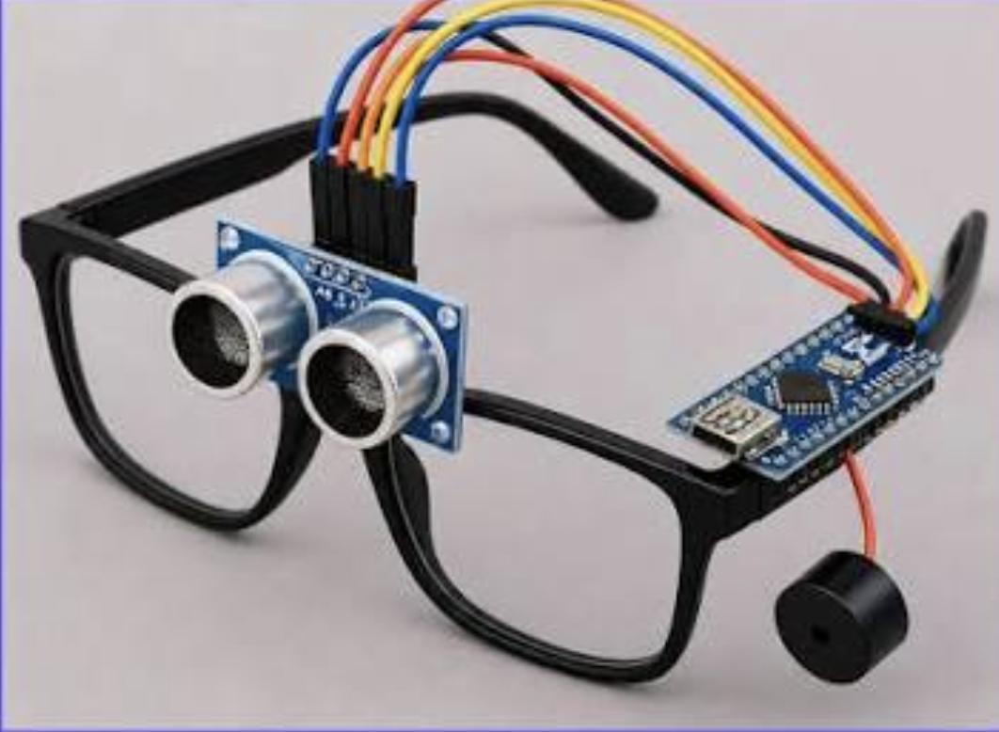

Armado paso a paso
Materiales: Arduino Nano (o Uno), sensor ultrasónico HC-SR04, buzzer, batería de 9 V con portapilas (con cable/conector), marco de gafas, cables jumper, mini protoboard o soldador, interruptor (opcional) y cinta o pegamento.

- Prepara los materialesReúne todo y revisa que el sensor, el buzzer y el Arduino funcionen.
- Conecta el sensor ultrasónicoVCC → 5V, GND → GND, TRIG → pin 9, ECHO → pin 10.
- Conecta el buzzerPata positiva (+) → pin 8 y pata negativa (−) → GND.
- Carga el códigoCon el Arduino IDE, sube el programa de la sección "Código" y prueba con la mano frente al sensor.
- Conecta la batería de 9 VEsta va conectada al puerto de energia redondo de la placa arduino que es de color negro
- Monta el sensor en el marcoPega el sensor al frente de las gafas, mirando hacia adelante, centrado entre los lentes.
- Fija Arduino, buzzer y bateríaColoca el Arduino y el portapilas en las patillas o en una cajita pegada, y el buzzer cerca de la oreja. Asegura los cables con cinta.
- Prueba finalEnciende y camina hacia una pared: el sonido debe acelerarse al acercarte.